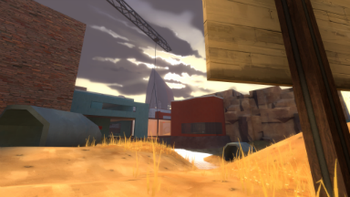
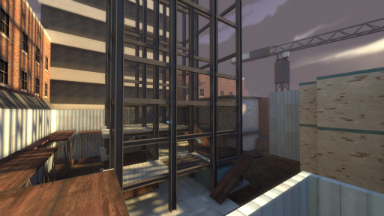
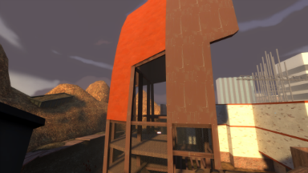
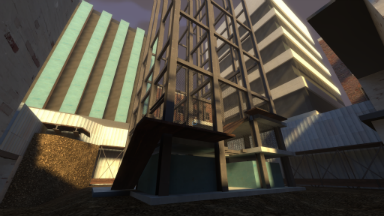
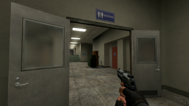
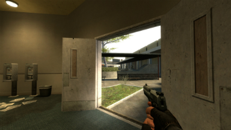
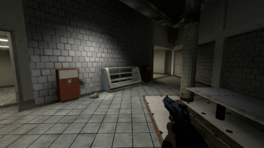
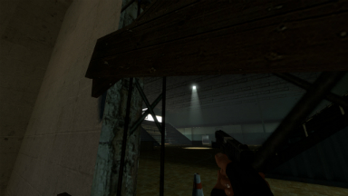

Sylvain Dubrofsky
Game Designer and VR Developer
Publications And Presentations
Article for Gamasutra about reward feedback
Design feature posts for RockBand.com
- Rock Band 3 New Features: Pro Guitar
- Rock Band 3 New Features: Pro Keys
- Rock Band 3 Senior Designer Sylvain Shares Details
Article for Gamecareerguide.com with lessons learned
Other Level Work
In my spare time I often work on levels for released games for fun. Here are pictures from a couple of them.
Team Fortress 2 CTF Level (Codename "Bubbles")
This is a symmetrical capture the flag level that I built with my friend Mars. The design is mostly complete and the level is really fun. Someday I hope to finish arting the level up.
-

A look up the middle. In the distance you can see the red home base poking into the sky.
-

The blue base is an under construction skyscraper. There are a couple primary ways in and even more to the flag.
-

The red base is large ship being taken apart. Even though it looks totally different, the bases are symmetrical.
-

Another look at the blue base. From here you can see some good engineer spots as well as paths that are soldier and scout friendly.
{kind=link}
{kind=link}
{kind=link}
{kind=link}
Counter-Strike: Source Level (Codename "Campus")
This near complete design for a hostage rescue map set in an adult education center (admittedly a controversial location). The design is complete and has some really fun routes and combat opportunities. It features a large section built on a 45 degree grid which is a nice challenge in Hammer :)
-

A look up the middle. In the distance you can see the red home base poking into the sky.
-

Blue base is an under construction skyscraper. There are a couple primary ways in and even more to the flag.
-

The red base is large ship being taken apart. Even though it looks totally different, the bases are symmetrical.
-

Another look at the blue base. From here you can see some good engineer spots as well as paths that are soldier and scout friendly.
{kind=link}
{kind=link}
{kind=link}
{kind=link}